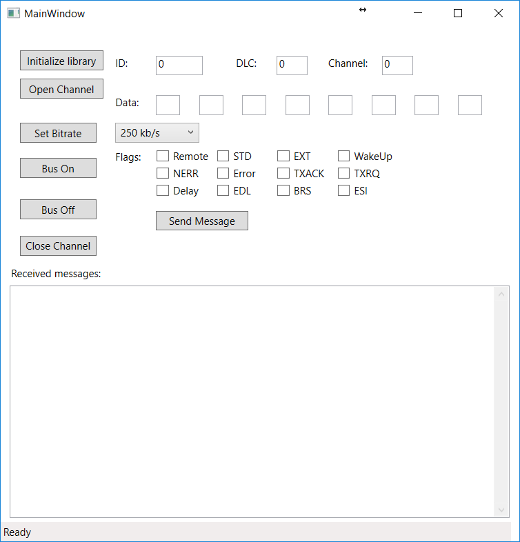

In this series, we will demonstrate how to create a simple program that can read an write messages to a channel. For the GUI, we will use the Windows Presentation Foundation system.
As usual, you need to have a reference in your project to the correct canlibCLSNET.dll. You also need to import the library in your class files.
Constructing a GUI in Visual Studio is rather simple. We first create a WPF project and then drag and drop the different components we want onto the window. In our example, the result looks something like this:
As seen in the picture, there are buttons for each of the basic Canlib functions needed for setting up a channel and writing messages for it. Each of these buttons has a function which calls its respective Canlib functions. There is also a text box where all the messages to the handle are displayed. This is activated as soon as we go on bus.
The program doesn't do much error handling, but after each action, the status bar at the bottom is updated with information about which action was taken and if it succeeded.
XAML (Extensible Application Markup Language) is a markup language used in WPF to define the graphical components of the GUI. When we used the drag and drop features in Visual Studio, some of it is created, but it's not enough to make a very exciting program. To make the program useful, we add some properties to the elements to make stuff happen:
Click property of a button specifies a function which is called whenever the button is clicked. PreviewTextInput property is used in this example to call a function which prevents the user from entering non-integer values into fields which should only take integers.Tag property can be sued to attach some generic object to an element. In this program, we attached number to each of the flag checkboxes to make calculating the flag values of the messages a bit easier.As previously mentioned, each button calls a certain method which reads any possible parameters from the text fields and in turn calls a Canlib function. If you've read the first part of this tutorial, you're already familiar with them.
When the Bus On button is clicked and we put the channel on bus, we also start a BackgroundWorker which was created in the initialization method. This BackgroundWorker will run the DumpMessageLoop method, which is similar to the one used in Part 2 of this tutorial. It loops as long as the handle is on bus and no error occur, and prints any messages received on the channel. One difference is that this loop does not print to the console but rather calls the BackgroundWorker's ReportProgress method which passes the value on to the ProcessMessage method. The reason for using BackgroundWorker like instead of just spawning a new thread which runs DumpMessageLoop is that such a thread would not be able to access the GUI components and thus would be unable to update the output field.
One important thing to notice is that we do not use the same handle in DumpMessageLoop as we do in our main thread. This is because using the same handle in different threads at the same time can cause unexpected errors. Instead, we create a new one. Just like the original handle, we need to call BusOn and BusOff with this one.
One thing that hasn't been explained much previously in the tutorial is the message flag. The message flag is a field in the message which contains information about what kind of message is being sent. Each flag has a constant defined in Canlib. To get the flag value, the set flags' contants are added together. Each flag constant is a power of two, so the result of adding a certain set of flags is always unique. To find out if a flag is set, use the bitwise AND operator (&) on the message's flag and the flag constant. The result will be either 0 or the constant, depending on whether the flag is set or not. Some of the more important flags include:
canMSG_RTRcanMSG_EXTcanMSG_ERR